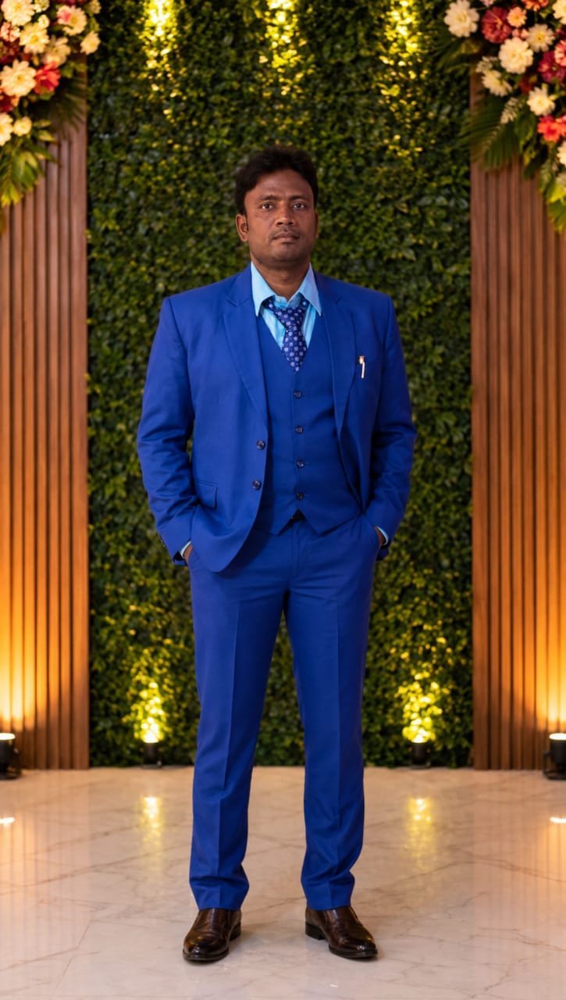

As the Director of Sahara Model School
My vision is to create a modern and technology-driven learning environment where students can discover their potential and prepare themselves for the challenges of the future
Founder & Director
I believe that education is not only about academic success; it is about developing knowledgeable, skilled, disciplined, confident, and responsible individuals who can contribute positively to society.
আধুনিক শিক্ষাই একটি উন্নত ভবিষ্যতের ভিত্তি।
আজকের পরিবর্তনশীল পৃথিবীতে শিক্ষার ধরনও প্রতিনিয়ত পরিবর্তিত হচ্ছে।
শুধু পাঠ্যবইয়ের জ্ঞান অর্জন করলেই একজন শিক্ষার্থী সম্পূর্ণ শিক্ষিত হয়ে ওঠে না।
তার সঙ্গে প্রয়োজন বাস্তব জ্ঞান, প্রযুক্তিগত দক্ষতা, নৈতিক মূল্যবোধ এবং সৃজনশীল চিন্তাভাবনাs। সাহারা মডেল স্কুলসেই আধুনিক শিক্ষার ধারণাকে সামনে রেখে এগিয়ে চলেছে।
আমাদের লক্ষ্য প্রতিটি শিক্ষার্থীর সুপ্ত প্রতিভাকে খুঁজে বের করা।
তাদের নিজেদের যোগ্যতার প্রতি আত্মবিশ্বাসী করে তোলা।
শিক্ষার্থীদের শুধু পরীক্ষায় ভালো ফল করার জন্য নয়, জীবনে সফল হওয়ার জন্য প্রস্তুত করা।
বর্তমান সময়ে কম্পিউটার ও প্রযুক্তির জ্ঞান অত্যন্ত গুরুত্বপূর্ণ।
তাই শিক্ষার সঙ্গে কম্পিউটার শিক্ষা ও প্রোগ্রামিংকে গুরুত্ব দেওয়া প্রয়োজন।
শিক্ষার্থীরা ছোটবেলা থেকেই প্রযুক্তির সঠিক ব্যবহার শিখলে ভবিষ্যতে তারা আরও দক্ষ হয়ে উঠবে।
বিজ্ঞানমনস্কতা গড়ে তোলাও আধুনিক শিক্ষার একটি গুরুত্বপূর্ণ অংশ।
প্রশ্ন করা, নতুন কিছু শেখা এবং নিজের চিন্তাভাবনা প্রকাশ করার সুযোগ শিক্ষার্থীদের দিতে হবে।
একই সঙ্গে নৈতিক শিক্ষার গুরুত্ব কখনোই কমানো যাবে না।
কারণ জ্ঞানী হওয়ার পাশাপাশি একজন ভালো মানুষ হওয়াও অত্যন্ত জরুরি।
সততা, শৃঙ্খলা, দায়িত্ববোধ ও মানবিক মূল্যবোধ শিক্ষার্থীদের চরিত্র গঠনে গুরুত্বপূর্ণ ভূমিকা রাখে।
একজন শিক্ষার্থীর সাফল্যের পেছনে শিক্ষক, অভিভাবক এবং প্রতিষ্ঠানের সম্মিলিত ভূমিকা রয়েছে।
তাই বিদ্যালয় ও অভিভাবকদের মধ্যে সুসম্পর্ক গড়ে তোলা অত্যন্ত জরুরি।
শিক্ষকদের আধুনিক শিক্ষাপদ্ধতি ব্যবহারের সুযোগ তৈরি করতে হবে।
শিক্ষার্থীদের জন্য আনন্দময় ও ভয়মুক্ত শিক্ষার পরিবেশ নিশ্চিত করা দরকার।
শিক্ষার পাশাপাশি খেলাধুলা, সাংস্কৃতিক কর্মকাণ্ড ও সৃজনশীল কার্যক্রমেও গুরুত্ব দিতে হবে।
কারণ একজন শিক্ষার্থীর সামগ্রিক বিকাশই প্রকৃত শিক্ষার উদ্দেশ্য।
সাহারা মডেল স্কুল এই সামগ্রিক শিক্ষার পরিবেশ গড়ে তোলার লক্ষ্যে কাজ করতে চায়।
আমরা চাই প্রতিটি শিক্ষার্থী নিজের স্বপ্নকে চিনতে শিখুক।
নিজের লক্ষ্য নির্ধারণ করুক এবং সেই লক্ষ্যে পৌঁছানোর জন্য পরিশ্রম করুক।
ব্যর্থতাকে ভয় না পেয়ে ব্যর্থতা থেকে শিক্ষা নেওয়ার মানসিকতা তৈরি করুক।
বর্তমান বিশ্বের সঙ্গে তাল মিলিয়ে ইংরেজি ভাষা ও ডিজিটাল দক্ষতাও বৃদ্ধি করা প্রয়োজন।
শিক্ষার্থীদের তথ্যপ্রযুক্তির সঠিক ও নিরাপদ ব্যবহার সম্পর্কে সচেতন করা জরুরি।
আমাদের শিক্ষা হবে জ্ঞানভিত্তিক, প্রযুক্তিনির্ভর এবং মূল্যবোধসম্পন্ন।
শিক্ষার্থীদের মধ্যে সহযোগিতা, নেতৃত্বের গুণ এবং সমস্যা সমাধানের দক্ষতা গড়ে তুলতে হবে।
কারণ ভবিষ্যতের কর্মক্ষেত্রে শুধু মুখস্থ জ্ঞান নয়, বাস্তব দক্ষতারও প্রয়োজন হবে।
সাহারা মডেল স্কুলের প্রতিটি শিক্ষার্থী যেন নিজের পরিবার, সমাজ ও দেশের জন্য গর্বের কারণ হয়ে ওঠে—এটাই আমাদের প্রত্যাশা।
আমরা বিশ্বাস করি, একটি ভালো শিক্ষা একটি সুন্দর ভবিষ্যৎ তৈরি করতে পারে।
একজন শিক্ষার্থীকে সঠিক দিকনির্দেশনা দেওয়া মানে একটি ভবিষ্যৎকে সঠিক পথে এগিয়ে দেওয়া।
তাই উপদেষ্টা কমিটি বিদ্যালয়ের শিক্ষার মান উন্নয়নে গঠনমূলক পরামর্শ প্রদান করবে।
শিক্ষার নতুন পদ্ধতি, প্রযুক্তি ও সময়োপযোগী বিষয়গুলোকে গুরুত্ব দেওয়া হবে।
বিদ্যালয়ের উন্নয়নের পাশাপাশি শিক্ষার্থীদের স্বার্থকেই সর্বোচ্চ গুরুত্ব দেওয়া হবে।
আমাদের প্রত্যাশা, শিক্ষকরা শিক্ষার্থীদের শুধু পড়াবেন না, তাদের অনুপ্রাণিতও করবেন।
অভিভাবকরাও সন্তানের শিক্ষাজীবনে সক্রিয়ভাবে সহযোগিতা করবেন।
একটি বিদ্যালয়ের প্রকৃত সাফল্য শুধু তার ফলাফলে নয়, তার শিক্ষার্থীদের আচরণ ও ভবিষ্যৎ সাফল্যের মধ্যেও প্রকাশ পায়।
তাই আমরা গুণগত ও মূল্যবোধসম্পন্ন শিক্ষার ওপর বিশেষ গুরুত্ব দিতে চাই।
সাহারা মডেল স্কুলকে একটি আধুনিক, শৃঙ্খলাবদ্ধ ও শিক্ষার্থীবান্ধব প্রতিষ্ঠান হিসেবে গড়ে তোলাই আমাদের অন্যতম লক্ষ্য।
আমরা চাই এখানে প্রতিটি শিক্ষার্থী শেখার আনন্দ অনুভব করুক।
নিজের প্রতিভা প্রকাশের সুযোগ পাক এবং নতুন কিছু করার সাহস অর্জন করুক।
শিক্ষা, প্রযুক্তি, নৈতিকতা ও সৃজনশীলতার সমন্বয়েই তৈরি হবে আগামী দিনের যোগ্য প্রজন্ম।
এই লক্ষ্য বাস্তবায়নে বিদ্যালয়ের শিক্ষক, অভিভাবক, উপদেষ্টা কমিটি এবং শিক্ষার্থীদের সম্মিলিত প্রচেষ্টা অত্যন্ত গুরুত্বপূর্ণ।
আমরা আশাবাদী, সম্মিলিত প্রচেষ্টায় সাহারা মডেল স্কুল ভবিষ্যতে আরও উন্নত ও সমৃদ্ধ শিক্ষার পরিবেশ তৈরি করতে সক্ষম হবে।
আমাদের লক্ষ্য শুধু ভালো ছাত্র তৈরি করা নয়; বরং জ্ঞানী, দক্ষ, সৎ, আত্মবিশ্বাসী ও দায়িত্বশীল মানুষ তৈরি করা।
সাহারা মডেল স্কুল হোক আধুনিক শিক্ষার একটি নির্ভরযোগ্য ঠিকানা—এই প্রত্যাশাই আমাদের।